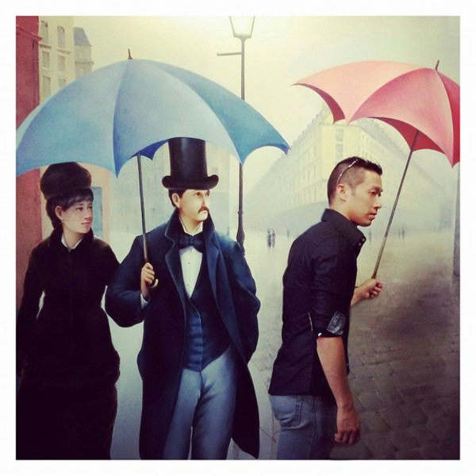

추석 당일 흐리고 곳곳 비… 보름달 보기 어렵고 귀경길은 오늘 오후 절정
추석인 25일 전국이 대체로 흐리고 강원 동해안과 경북 북부 동해안에 비가 내리겠다. 밤부터 중부지방에 비가 이어져 보름달을 보기 어렵겠고, 귀경 차량은 이날 오후에 가장 많이 몰릴 전망이다.
여년재 기자 · 2026.09.26
橋사회

추석 당일인 25일은 전국이 대체로 흐린 가운데 오전에 강원 동해안과 산지, 경북 북부 동해안에 비가 내리겠다고 기상청이 예보했다.
광고 문의 · 300×250밤에는 구름이 두텁게 끼고, 늦은 밤부터 26일 새벽 사이 중부지방에 비가 오겠다. 이 때문에 추석 밤 보름달은 대부분 지역에서 보기 어려울 것으로 보인다.
귀경길 정체는 오늘 오후
교통 당국과 기상청은 귀성 차량이 24일 오전, 귀경 차량이 25일 오후에 가장 많이 몰릴 것으로 내다봤다. 비가 오는 구간에서는 노면이 미끄러워 제동 거리가 길어지므로 차간 거리를 충분히 두고 감속 운전해야 한다.
26일에는 비구름대가 남부지방과 제주로 이동하면서 비가 오는 지역이 넓어지겠다. 연휴 후반 이동을 계획한 사람은 출발 전 날씨와 도로 상황을 함께 확인하는 것이 좋다.
연휴 안전 수칙
비 오는 날 성묘나 야외 나들이를 할 때는 미끄러운 산길에 주의해야 한다. 장거리 운전 때는 두 시간마다 쉬어 졸음운전을 피하고, 고속도로 휴게소와 졸음쉼터를 적극 활용할 필요가 있다.
해상 교통을 이용하는 귀성객은 안개와 풍랑에 따른 선박 운항 변경 여부를 미리 확인해야 한다고 기상청은 당부했다.
출처·참고 (사실 확인용 — 본문은 직접 재작성)
· 경향신문
· 경향신문